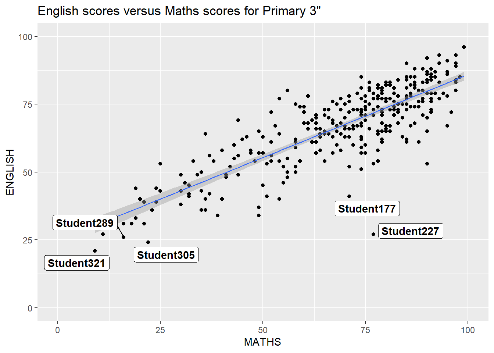

exam_data <- read.csv("data/Exam_data.csv")Hands-on Exercise 2
ggrepel
An extension of ggplot that can deal with overlapping text For example, add “_repel” to geom_label
ggplot(data=exam_data,aes(x=MATHS,y=ENGLISH))+
geom_point()+
geom_smooth(method=lm,linewidth=0.5)+
geom_label_repel(aes(label=ID),fontface='bold')+
coord_cartesian(xlim=c(0,100),ylim=c(0,100))+
ggtitle('English scores versus Maths scores for Primary 3"')`geom_smooth()` using formula = 'y ~ x'Warning: ggrepel: 317 unlabeled data points (too many overlaps). Consider
increasing max.overlaps
ggplot theme
p1 <- ggplot(data=exam_data,aes(x=MATHS))+
geom_histogram(bins=20,
boundary=100,
color='grey25',
fill='grey90')+
theme_gray()+
ggtitle("Distribution of math scores")
p1ggplot(data=exam_data,aes(x=MATHS))+
geom_histogram(bins=20,
boundary=100,
color='grey25',
fill='grey90')+
theme_economist()+
ggtitle("Distribution of math scores")Working with hrbthems package
More fonts and label placements choices, adjust by axis_title size, base_size, axis_text_size
ggplot(data=exam_data,aes(x=MATHS))+
geom_histogram(bins=20,boundary=100,
fill='grey25',
color='grey90')+
ggtitle("Distribution of math scores")+
theme_ipsum(axis_title_size = 20,base_size=20,grid='Y') Beyond Single Graph
p2 <- ggplot(data=exam_data,aes(x=ENGLISH))+
geom_histogram(bins=20, boundary=100,fill='grey20',color='grey90')+
ggtitle("Distribution of English score")+
coord_cartesian(xlim=c(0,100))
p2p3 <- ggplot(data=exam_data,
aes(x= MATHS,
y=ENGLISH)) +
geom_point() +
geom_smooth(method=lm,
size=0.5) +
coord_cartesian(xlim=c(0,100),
ylim=c(0,100)) +
ggtitle("English scores versus Maths scores for Primary 3")
p3`geom_smooth()` using formula = 'y ~ x'
Combining two ggplot2 graphs
p1|p2“|” operator to stack two ggplot2 graphs,
“/” operator to place the plots beside each other,
“()” operator the define the sequence of the plotting
Add tag
((p1 / p2) | p3) +
plot_annotation(tag_levels = 'I')`geom_smooth()` using formula = 'y ~ x'Place plots on top of below other plots
p3 + inset_element(p2,
left = 0.02,
bottom = 0.7,
right = 0.5,
top = 1)`geom_smooth()` using formula = 'y ~ x'Use patchwork and ggtheme
patchwork <- p3| (p1 / p2)
patchwork & theme_economist()+theme(plot.title = element_text(size = 9))`geom_smooth()` using formula = 'y ~ x'